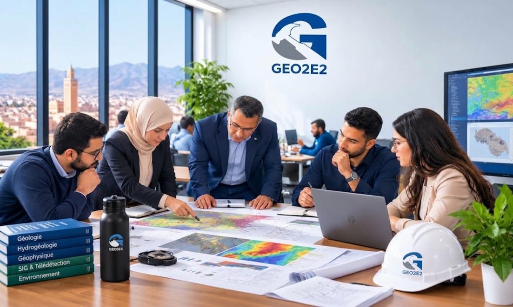

01
01
Mines et carrières
Exploration minière, cartographie et coupes géologiques, géochimie, géophysique, estimation des ressources et accompagnement des projets miniers.
En savoir plus
GEOEXPLORER GÉORESOURCES ET ENVIRONNEMENT
Développement de projets miniers, expertise en hydrogéophysique, géomatique, environnement et formation professionnelle
Bureau d'études agréé
GEO2E2 accompagne ses partenaires dans le développement de projets miniers, la gestion des ressources en eau et de l'environnement, et propose des formations professionnelles dans différentes disciplines des géosciences.

Transformer chaque défi géologique en une opportunité de succès.
Qui sommes-nous ?
GEO2E2 est un bureau d'études agréé qui accompagne ses partenaires dans le développement de projets miniers et de projets relatifs aux ressources en eau et à l'environnement. Il assure également des formations professionnelles dans différentes disciplines des géosciences.
Notre structure met au service de ses partenaires une expertise approfondie et une approche résolument innovante. Forte d'une équipe d'experts hautement qualifiés et d'une méthodologie rigoureuse, elle conçoit et déploie des solutions sur mesure, adaptées aux spécificités de chaque projet.
Notre ambition est d'apporter des réponses fiables, durables et performantes aux enjeux actuels du secteur minier et de la gestion des ressources hydriques.
Notre expertise
Une expertise intégrée pour accompagner les projets miniers, les ressources en eau, l'environnement et le renforcement des compétences.
01
Exploration minière, cartographie et coupes géologiques, géochimie, géophysique, estimation des ressources et accompagnement des projets miniers.
En savoir plus 02
02
Études hydrogéologiques, exploration géophysique, essais de pompage, modélisation et gestion durable des ressources en eau.
En savoir plus 03
03
Études d'impact, analyse spatiale, cartographie des aléas, gestion des risques naturels et planification territoriale durable.
En savoir plus 04
04
Des programmes conçus pour les institutions publiques et privées, avec un encadrement pratique sur le terrain et un transfert de savoir-faire.
En savoir plusOutils et méthodologies
Notre méthodologie repose principalement sur le travail de terrain, les tests et analyses de laboratoire et le traitement d'une base de données géologique et géographique exhaustive. Les données sont compilées, analysées et interprétées pour aboutir à une modélisation et une conception contrôlées.
Missions de terrain, levés, échantillonnage et implantation des forages.
Tests, analyses et caractérisation des échantillons prélevés.
Géophysique, données géologiques, SIG, télédétection et modélisation spatiale.
Validation des résultats, calcul de réserves et documents techniques finaux.
Références techniques
Exploration minière, hydrogéologie, environnement et formation : nos missions accompagnent des sociétés minières, des institutions et des opérateurs publics et privés à travers le Maroc.
« Réalisation de rapports géologiques et préparation des dossiers relatifs aux titres miniers, au bénéfice de sociétés dont les activités sont focalisées dans l'Anti-Atlas. »
Un projet à accompagner ?
Expertise minière, ressources en eau, environnement ou formation : notre équipe vous répond.